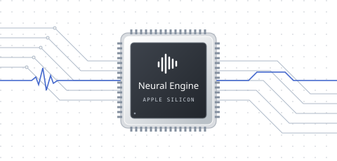

Без лишних слов.
«Ну» и «эээ» исчезнут, а «сделай текст короче» останется. Отредактируйте фразу или выберите пример.
У курсора
Голосовой ввод для Mac
Нажмите ⌥ Space и говорите. Record AI вставит текст туда, где стоит курсор. Всё распознавание — на вашем Mac.
macOS 14+ · Apple Silicon · ≈3 МБ
Возможности
Говорите в своём темпе. Record AI расставит знаки препинания и уберёт слова-паразиты.
«Ну» и «эээ» исчезнут, а «сделай текст короче» останется. Отредактируйте фразу или выберите пример.
Необязательно
Если хочется ещё точнее, включите в настройках исправление через GPT. Он поправит неверно услышанные слова, пунктуацию и регистр, не переписывая ваши формулировки.
Выключено по умолчанию. Когда включено, в OpenAI уходит только распознанный текст, голос — никогда. Нет сети — вставится обычный локальный текст.
Завтра созван в 10, надо обсудить релиз и деплей.
Завтра созвон в 10, надо обсудить релиз и деплой.
Пример ошибки распознавания и её исправления.
Зажмите сочетание, чтобы начать, и отпустите, чтобы вставить текст. Для длинной диктовки нажмите один раз в начале и ещё раз в конце.
Нажмите ⌥⇧ Space, чтобы открыть историю у курсора. Выберите фразу для вставки.
Здесь появится выбранная фраза
Технология
WhisperKit запускает модель распознавания на Apple Neural Engine. Каждая фраза обрабатывается уже во время диктовки.

Аудио обрабатывается в памяти Mac. Приложение его не сохраняет и никуда не отправляет. Тексты диктовок хранятся на устройстве семь дней и удаляются автоматически. Интернет нужен один раз — для загрузки модели. Исправление через GPT по желанию: только текст и только если вы его включили.
Откройте файл Record-AI.dmg.
Перетащите Record AI на папку Applications в окне установщика.
В «Программах» нажмите на Record AI правой кнопкой и выберите «Открыть». В предупреждении нажмите «Готово». Затем откройте «Системные настройки» → «Конфиденциальность и безопасность» и нажмите «Всё равно открыть».
У приложения нет сертификата разработчика, поэтому Gatekeeper просит подтвердить запуск. Можно также снять атрибут карантина через Терминал.
xattr -dr com.apple.quarantine "/Applications/Record AI.app"Дайте доступ к микрофону для записи речи и включите «Универсальный доступ» для вставки текста. При первом запуске загрузится модель объёмом около 1,6 ГБ. Её подготовка может занять до 15 минут.
Справка
Да. Исходный код закрыт, а само приложение бесплатно. Без подписки, рекламы и ограничений по времени.
Whisper large-v3-turbo понимает разговорную речь и сленг, расставляет знаки препинания и сохраняет английские термины внутри русской фразы.
Это необязательная функция, по умолчанию она выключена. GPT исправляет слова, которые модель услышала неверно, а также пунктуацию и регистр. Включается в настройках Record AI: через подписку ChatGPT (нужен Codex CLI, выполните в нём вход через ChatGPT командой codex login) или через ключ API OpenAI. В OpenAI отправляется только распознанный текст, голос остаётся на Mac. Если сеть недоступна или ответ задерживается, вставится обычный локальный текст.
Везде, где можно поставить текстовый курсор, в том числе в заметках, почте, браузере, редакторе кода или терминале. Текст вставится туда, где стоял курсор в начале диктовки.
Нужен Mac на Apple Silicon (M1 или новее) с macOS 14 Sonoma или новее. Mac с процессором Intel не поддерживается.
Файл приложения весит около 3 МБ. При первом запуске Record AI загрузит модель распознавания — ещё около 1,6 ГБ.
Откройте Record AI через Spotlight (⌘ Space). В настройках можно назначить сочетание или одну клавишу, например Ё.
Откройте Record AI через Spotlight, нажмите «Выйти из Record AI» и перетащите приложение в корзину. Папку с моделью и историей тоже можно удалить: ~/Library/Application Support/RecordAI.